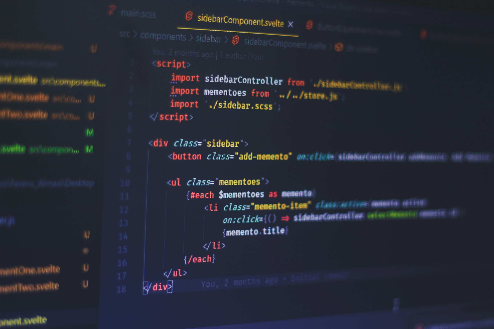

Kyle Naumann
About Me
Welcome to my WDD 131 site. I'm Kyle, and I'm taking on web development as part of expanding my skill set. After years in other fields, I've decided to dive into coding - better late than never, right? There's something really satisfying about building functional websites from the ground up.
I'm approaching this with the perspective that comes from experience - I know what good user interfaces should feel like, and now I'm learning how to actually build them. The combination of technical problem-solving and creative design really appeals to me.
Course Projects
This section will showcase the projects I'm working on throughout the course. Each assignment is a chance to apply what I'm learning and tackle real-world development challenges. I'm finding that the best way to really understand these concepts is to get my hands dirty and build something tangible.
From responsive layouts to interactive JavaScript features, I'm documenting my progress as I develop these skills. It's interesting to see how each project builds on the previous ones, creating a solid foundation in modern web development practices.